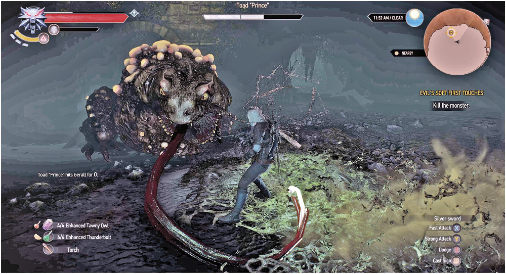
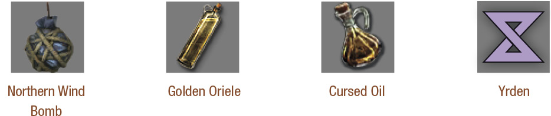

A giant Toad lands with a disgusting squish on the ground of the circular chamber. You must vanquish this poisonous, bloated beast before you continue.

Defeating Toad “Prince”: The Beast’s Attacks
The Toad Prince has the following attacks and maneuvers to be aware of:
Jump: Expect a leaping maneuver whenever the Toad jumps to face you, jumps forward to change position, or leaps back when you’re too close. It likes to leap and land behind or to the side of you, forcing you to change view. Simply lock onto the beast when this happens so you don’t lose sight of it, and roll or dodge so you aren’t a sitting duck.
Jump and Squash: Closer in, the Toad Prince’s leap sometimes ends with it knocking you down with the sheer force of its impact, staggering you. Make sure you rapidly react with a well-timed roll or dodge.
Vomit: This disgusting projectile is usually vomited out at closer ranges, obscures your vision like a Water Hag’s attack, hits in a wide arc, and is poisonous. It is also easily dodged.
Spit: Another revolting offensive technique, the Toad launches a blob of spit at you, inflicting poison damage if it connects, and turning into a poison cloud at the point of impact if it doesn’t. Dodge it!
Tongue Lash: When you’re at long-range, expect a darting lash straight at you. At mid-range, the lash is at a wider, horizontal angle. A roll or dodge, or a retreat when you see the monster’s maw open, helps minimize damage. A riskier plan is to roll directly at the Toad, slicing at it (usually at the side) while the tongue attack finishes.
Gaseous Emissions: Poison sacs on the Toad’s back throw up large poison globules that explode and cause a small puddle and poison cloud to appear when they impact (which are three random points in the arena). Avoid the puddle and cloud; backing up is a good plan here. Then light the gas clouds with Igni (assuming you’re not inside them!).
General Toad Tactics: As soon as the battle begins, the Toad utilizes ranged attacks to dominate the arena. Get in close, and the Toad jumps, landing and attempting to strike you to inflict tremendous damage and knocking you down. Stay too far away and remain defensive, and expect poison clouds (both via spit and gas attacks). The Toad’s large health and powerful attacks mean you need to keep moving, and looking for an opening to inflict as much damage as possible.
Defeating Toad “Prince”: The Best Battle Tactics
A Good Defense: As the battle begins, cast Quen to add an extra layer of protection. Even better is the Golden Oriole potion, which nullifies the Toad’s poisonous attacks, and allows you to heal yourself using the Toad’s previously deadly gas clouds!
Circling for the Kill: Keep yourself moving at all times, ideally circling left or right of the Toad and moving toward it. This usually allows you to more easily evade any of the Toad’s attacks, or at least gives you a greater chance to react to them.
Swordplay and Yrden: Cast Yrden at mid-range and retreat so the Toad follows you, enters your magic circle, and slows down considerably. Coat your sword in Cursed Oil, then make up to three strong strikes before retreating. Without Yrden, dodge or roll to the side (as you would attack a Bear), inflict two regular slashes, and retreat.
Igni and Ranged Attacks: Despite Shani mentioning the Toad’s lack of fearing fire, this foe can be damaged with Igni, though this isn’t as significantly damaging, and is mainly used to clear any poison clouds in your vicinity. At long range, lob in a Northern Wind bomb to immobilize this foe. Throw Superior Dancing Star from the chamber’s edge is another option, to stun the Toad before following up with sword violence.
Other Advice
Never stay in the same spot for long, the Toad’s spit attacks leave poison clouds on the ground and his various other ranged attacks can damage you no matter where you try to hide. Approach the Toad and provoke it to jump up and slam down until it is facing you (dodge in close then dodge away as soon as the Toad jumps up. This keeps you out of its attack range but keeps you close enough to start attacking as soon as it’s safe). When close enough, cast Yrden on the ground to trap the Toad, then attack it with your sword. The Toad becomes un-trapped after three hits or five seconds. Northern Wind bombs also freeze and trap the Toad, preventing it from attacking, and allow you to get close and attack. The Golden Oriole potion causes the Toad’s poison to heal you instead of damaging you; use this potion during the fight as you’re almost guaranteed to be able to walk into a poison cloud. Using Igni forces the Toad to jump away. This is useful to interrupt the Toad’s maneuvers and force it to jump to a new location within the arena.
Toad “Prince” Vulnerabilities

After combat concludes, you’re coated in unpleasant slime after gutting the Toad Prince, and witness a transformation just as you slip into unconsciousness.
The Witcher® is a trademark of CD PROJEKT S. A. The Witcher game © CD PROJEKT S. A. All rights reserved. The Witcher game is based on a novel by Andrzej Sapkowski. All other copyrights and trademarks are the property of their respective owners. Learn more at thewitcher.com.
{kind=link}